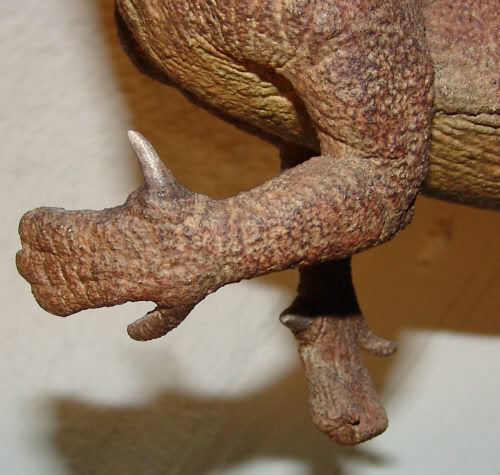

Photo 1: A herd of Camarasaurus
Photo 2: A Camarasaurus skeleton
Photo 3: A Camarasaurus walking
Spike Thumbs
Iguanodon was a gentle plant-eating dinosaur, despite the scary-looking, foot-long spikes on the ends of its thumbs. These spikes may have been a means of defense against carnivores or they may simply have been handy tools for breaking open tough-shelled fruits.
Say My Name:
ig-GWAH-no-don

Early Discovery
Iguanodon was one of the first dinosaurs ever to be discovered (in England in 1822) and only the second ever to receive a name.

Toothy Grin
The first Iguanodon fossils ever found were teeth that looked like those of a modern day iguana. That's how it got its name.